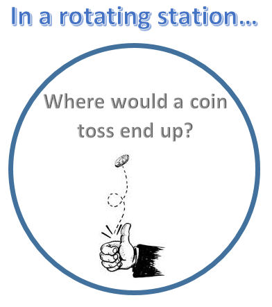
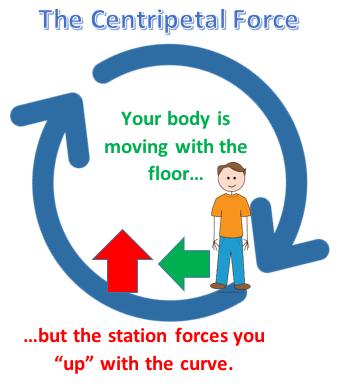
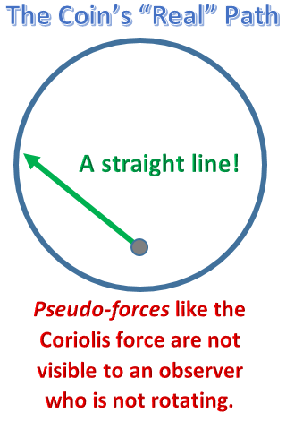
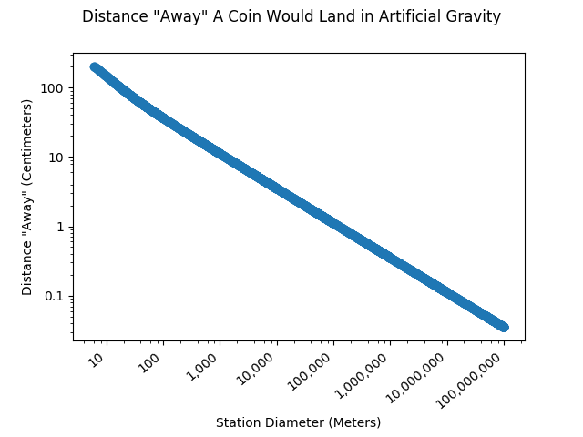
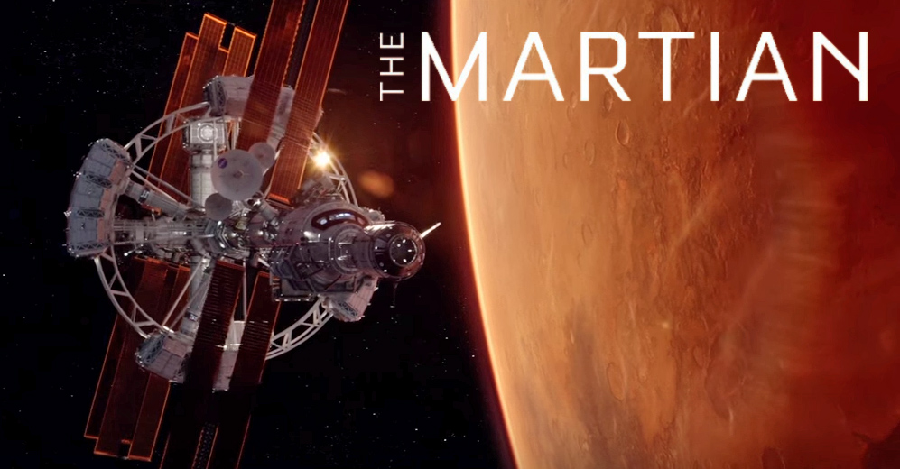
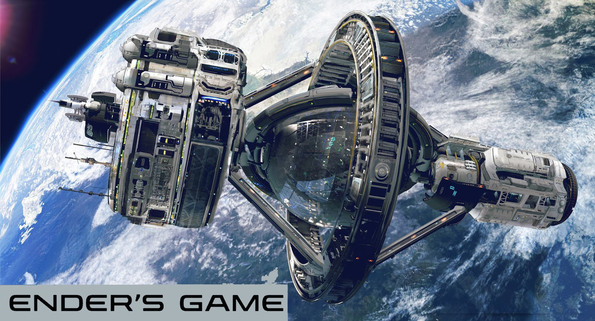
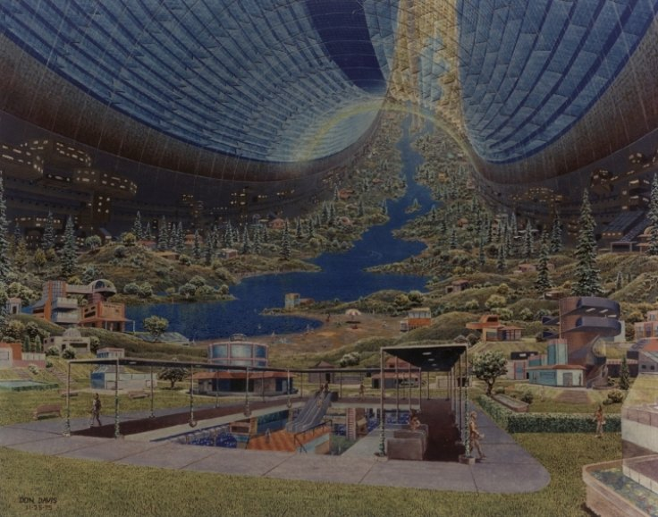

Artificial gravity is as important to pop culture as it is to future space missions. It is important to the future health of real astronauts, and we see it in nearly every space movie. How would man-made gravity work? How does the physics hold up in your favorite sci-fi movies?
I’m not asking you to discount any of your favorite movies just because the physics principles in them might not be accurate. But really, what would artificial gravity look like in space? I have generated a computer model to provide an answer. My model shows that, thanks to the Coriolis effect, artificial gravity would be very strange.

In the real world, we can create artificial gravity by spinning something. This creates what is called the centripetal force. If you spin a bucket of water around your head, the water will stay inside! In space, rotating things will continue rotating perpetually, generating gravity.

Now, I would like you to imagine a coin toss as a thought experiment. What would a coin toss look like on a space station with artificial gravity? My computer model will show you.
Imagine you are on Earth, and you throw a coin perfectly straight upwards, 3 feet into the air. We can expect this coin to land directly beneath you. Now, let's duplicate this throw in artificial gravity. How far away from your feet will the coin be when it lands on the floor?
My model assumes:
- there is no air resistance
- the rotation has a diameter of 50 feet
- you throw from 4 feet off the ground
- before the throw, the coin was somehow attached to the floor (i.e. it was rotating with the station).
- the virtual space station is rotating clockwise (counterclockwise would be flipped)
- you use the same force you would have used on Earth to throw 3 feet into the air, to 7 feet height.
As you experiment with the values, you will see that the final result changes. Spoiler alert: the coin does not land at your feet!
Note: the answer in the “results” table may differ from what you see on the drawn scale. The calculated distance is the straight-line distance from your feet. The drawn scale shows the distance along the curve, which is longer.
The coin would land about as far over as you threw it upwards! What causes this weirdness? The Coriolis effect!
If you would like to see the math I used to create the model, follow this link.
The Coriolis effect is an artifact of artificial gravity that causes objects to move in unexpected directions. The more I’ve read and seen about the Coriolis effect, the more I’m convinced that life with artificial gravity would be very difficult to get used to. You would feel an ever-present “force” countering everything you do.
Furthermore, the Coriolis effect could cause nausea! It is unclear how well our bodies would adapt to perpetual rotation. Fortunately, it may be possible to reduce this nausea through engineering.
Unfortunately, we do not currently have a space station with artificial gravity, so the concepts in this article are essentially discussing future tech; but the physics behind artificial gravity is real and could be put into practice in space. It will be essential for future space travel!
Now that I have shown you my model, I'll discuss the science of weightlessness and artificial gravity. Then, I’ll use that physics to dive into everyone’s favorite sci-fi movies. I'll describe how you could minimize the Coriolis effect in future space stations. At the end of the article, I have attached a second Coriolis model I found elsewhere on the Internet.
The problem of weightlessness
Why produce artificial gravity if it is so difficult? Weightlessness is toxic to our health! If humanity wishes to expand its presence in space, we will need to produce artificial gravity.
Astronaut Scott Kelley just completed an important mission on the International Space Station: he stayed in space for an entire year while his identical twin brother lived on earth. This allowed scientists to study the molecular changes that occurred in Scott’s body, so NASA can better prepare for a mission to Mars. Here is an article that discusses some of the findings. Let me summarize it so you don’t have to read it: in Scott’s body, scientists discovered inflammation, premature aging, bone loss, and (small) decreases in cognitive ability. If our country is planning long-distance missions to Mars, then artificial gravity will (or should be) important!
It is effectively impossible for astronauts to exercise enough to counteract the effects of zero gravity. If we do not develop artificial gravity, astronauts will suffer from brittle bones, weak muscles, low immunity, and poor health. Life in space will not be sustainable without it.
The Physics of Artificial Gravity
What would artificial gravity be like?
To help you understand the answer to this question, I need to help you understand a bit of physics.

The centripetal force works by fighting your inertia. As your body attempts to move in a straight line, the station pushes you with the curve. Unlike gravity, which “pulls you down,” the floor constantly “pushes you up.”
You would feel different “forces” in every direction of motion. To be clear, these forces are not real forces because they are only apparent to someone who is spinning. You would be intuitively aware of which direction the space station is going. By moving your body, the Coriolis effect would indicate to you which direction you are rotating.

Here are some of the forces you would see:
-
Objects moving with the rotation would be effectively rotating more quickly. This would increase the downward “force” felt.
-
Objects moving opposite the rotation would become “lighter” and would move “up” from what you expect.
-
“Upward” motion would cause a “force” toward the direction of rotation.
-
“Downward” motion would cause a “force” away from the direction of rotation.
The larger the station, the smaller these Coriolis effects will become; however, to make the effects unnoticeable, you would need an impractically massive space station. I have modeled our coin toss in a graph. Earth-“normalness” increases on a logarithmic scale!

This uses the same assumptions as stated in the introduction: the throw starts from four feet and goes three feet up in the air. The Python code I used to generate this can be found here.
Life in artificial gravity would show a few additional effects:
-
If you were to climb toward the center of the station, gravity would decrease. At the exact center of the station, there would be no gravity at all.
-
The station would need to be balanced for the gravity to work properly. The station will rotate around its center of gravity, wherever it is.
-
The station's rotation may decrease over time as objects onboard interact with each other; the station would need a periodic “boost.”
-
Nonetheless, the rotation would be essentially perpetual. The objects onboard are moving at a constant speed perpendicular to the centripetal force, thus they are not consuming energy. The station's rotational momentum is constant, or “conserved.”
Fun things to do with the computer model
If you would like to get a better grasp of what the Coriolis effect would look like, here are some things you can do with my model.
-
Throw the coin super high. At a high speed, it simply crashes against the other side of the station, but on a curve.
-
Try dropping the coin instead of throwing it (throw it “up” 0 feet). It curves in the opposite direction!
-
Next, try dropping the coin (throw 0 ft up) from almost the center of the station, at 24.5 feet height. It appears to spiral outward slowly because you are rotating relative to it.
-
Now try dropping it at the exact center of the station. The coin will never land! There is no gravity there! The computer does not attempt to draw it.
-
Now reset the throw height to 3 feet. Then try experimenting with the angle of the throw. Positive degrees are to the “right”, and negative degrees are to the “left”. At 25 degrees (at about 14 ft/s, start at 4 ft), the coin loops back on itself.
-
Try throwing the ball exactly opposite the rotation (90 degrees from vertical). The throw stretches out impressively far!
-
Increase the throw velocity to almost exactly match the “standing speed of coin” (23.823 ft/s on default settings). Set the throw to 90 degrees again. It never almost never lands! Check the “time in the air!” (The model shows it landing because the “standing speed” is rounded. You cannot match it exactly.)
-
Continue to exactly matching the coin's “standing speed.” Now decrease the throw angle by one degree (to 89 degrees), so it launches one degree up from horizontal. It slowly spirals upward toward the center, at which point it reverses direction and spirals back down to the floor!
-
Now set the station diameter to something unrealistically huge, such as 500000000 feet or meters. The throws now appear as they would on earth!
Artificial gravity in science fiction
Artificial gravity has never been used in space, so our current perspective comes from science fiction. I would like to discuss the physics of sci-fi movies so that you can better understand how artificial gravity works. This way, you can be able to interpret what is “real” and “not real” in our universe.
Sci-fi movies are entertaining, but they do not give you a realistic picture of artificial gravity. I’m not suggesting that science fiction should change; the screenwriters need to tell a compelling story. A “real” picture of artificial gravity would not be cinematic!
One of my BYU physics professors once summed up the fiction of sci-fi very well. He said, “When I watch a sci-fi movie, I allow one, or maybe two, impossible technologies. After that, I consider it fantasy.” I love sci-fi movies, but I recognize that they are fantasy, not science.
From what I have seen, different sci-fi movies contain different levels of fantasy. Some movies have taken a more “realistic” approach, painstakingly following the laws of physics as we understand them. On the other hand, some movies are entirely fantastical; these also provide a good story, but they are not scientific. These two categories are difficult to separate; a film that is accurate in one way may be entirely fantastical when it describes something else. Given that my purpose is to discuss the Coriolis effect, I will separate these movies based on whether or not they use rotation in their space stations. Let me discuss how artificial gravity fits into these universes.
“Real” Sci-fi
Recently, some movies have attempted to accurately portray science in fiction. There are some reasonably accurate sci-fi stories out there. In these movies, artificial gravity is correctly generated by rotation.
None of these films mention the Coriolis effect, despite the massive presence it would have in future space missions. This omission is to be expected; we’ve never even built such a station before, so how could we depict it? If we someday build a massive space infrastructure capable of supporting artificial-gravity environments, the Coriolis effect will be the least of our troubles.

Several films worth mentioning in this category are The Martian, Interstellar, Passengers, and Ender's Game. Each of these films features a spacecraft that generates gravity through rotation. In The Martian, the “Hermes” spacecraft rotates as it shuttles astronauts back and forth to Mars. In Interstellar, the rotating “Endurance” spacecraft transports astronauts past a fictional wormhole.

In Passengers, the entire film takes place aboard the rotating spacecraft, the Avalon. Passengers travel for years at relativistic speeds to emigrate to another star system. I found this film fascinating because it attempts to show relativistic travel without breaking the laws of physics. The gravity is mostly correct, though it makes one minor mistake: a failure in the gravity drive would not be instantaneous. The passengers would have time to adjust before particles in space cause the rotation to slow down.

Finally, Ender’s Game is a fantasy story, but the story centers around realistic artificial gravity. This film is about Ender, a boy in a space army who is trained to fight battles in zero gravity. Gravity decreases as you approach the center of the station, where there is a zero-gravity “battle room.”
This particular story could benefit if it addressed the Coriolis effect; this plot is about how artificial gravity works! Even in such a massive space station where Ender lives, the Coriolis effect could not be avoided. This effect would be very real to Ender. If the story were to contain an artificial-gravity battle room, every action would depend on the direction one faces, just like the zero-gravity battle room.
Fantasy Sci-fi

In most sci-fi movies, you see an artificial gravity “generator” underneath the station that uses an energy source to produce pure gravity. This is the view in the Star Wars and Star Trek universes. This is how I choose to define “fantasy.” A “pure” gravity source would not be possible! Even if, in the far-distant future, a method were found to convert energy into pure gravity, it would take such an unimaginably huge energy source that it will never ever be practical.
Real gravity is produced by mass. Albert Einstein famously discovered the relationship between mass and energy (and thus gravity) with the equation \(E=mc^2\). In this equation, c equals the speed of light, an enormous number. Simulating the necessary mass would require an impossibly large amount of energy.
If we did manage to produce real gravity from energy, it would create a real gravity well. The acceleration due to this gravity would dissipate through space the same way the Earth's gravity does, following the equation, \(a = (G m)/r^2\), where G is the gravitational constant and r is the distance from the gravity source. Earth would accelerate toward the station!

Leaving the math aside, there is one other story worth mentioning in this category: the video game, Halo: Combat Evolved. This story centers around the discovery of a massive ring world created by advanced humans from the distant past.
This ring world does not generate its gravity through rotation, even though it could easily do so. (See this link: Halo “also uses some form of field or other artificially generated gravity as it is stated in Halo: The Flood, the ring world does not spin nearly fast enough to create the amount of gravity it possesses.”) Furthermore, a station like this would require a glass ceiling to retain an atmosphere.
Let’s pretend for a moment that the ring world does correctly generate artificial gravity. This would be interesting because massive stations minimize the Coriolis effect. Would the effect still be noticeable?
According to the same Wikipedia article I cited above, the ring in Halo: Combat Evolved is approximately 10,000 km in diameter (10,000,000 meters, 33,000,000 ft, or 6,200 miles). If you insert these numbers into my model, you will see that our coin toss would land about a millimeter away.
Now try a scenario realistic to the Master Chief, the main character of Halo. He is known for launching high-speed projectiles. A bullet would travel proportionally close to the speed of the floor, thus it would follow a distorted path. Try firing the coin at 2500 ft/s (average bullet speed) at 90 degrees from vertical (with a station diameter of 33000000 ft). The results table tells us how this would turn out (though the drawn path has terrible proportions). The projectile would land about 150 feet away from its expected location!
The Master Chief's firing would be quite difficult. The error would be different depending on the direction he is facing, the velocity of the projectile, and the size of the station (i.e. which station he is standing on). Changing the launching angle by just a degree changes the result dramatically. He would need some sort of “smart ballistics” capable of calculating the constantly changing error.
Designing a real space station that minimizes the Coriolis effect
To achieve earth-“normalness” in artificial gravity, you would need a massively huge station!

Interestingly, NASA once designed a massive ring station, a “Stanford torus,” as a thought experiment in 1975. It has a proposed diameter of 1800 meters (1.1 miles); the coin toss would produce an error of 3 in (8 cm).
This NASA thought experiment was not meant to be practical (or to be built). It was simply meant to serve as an example of a theoretical self-sustaining massive space station. The picture above is an artist's rendering of it. Here is an interesting news story about it.
It is unclear how large the station would need to be to prevent nausea. This Wikipedia page discusses the issue, suggesting that no effects would be felt with a rotation rate of less than 2 rpm, however this has not been researched extensively. If this is true, a rotation rate of 2 rpm would require a diameter of 1600 ft (500 m) with full gravity. The International Space Station is 356 feet wide, less than a quarter the size!
If it requires such a large diameter to minimize the Coriolis effect, then how can a decent space station ever be constructed? The station does not necessarily need to be circular. What if, instead of building a large ring, we created two smaller stations connected by a tether? These two sections could spin around each other and produce gravity.
A space station like this could have an arbitrarily large diameter, defined only by the strength of the tether holding the capsules together. The tether may require unusually strong materials such as carbon nanotubes. Nonetheless, this might be possible in the near future.
Conclusion
We have a long way to go before we'll be producing artificial gravity environments in space. It would be difficult to accomplish well, though it will also be essential to space travel. If we were to move around in a spinning space station, we would feel unexpected “forces” acting on us, and the environment may be nauseating. Nonetheless, the Coriolis effect gives us something to think about. Now we know how it would work.
Another Example of the Coriolis Effect
This website contains another interesting Coriolis model. Here, Andy Giger poses a similar question: what would it look like if you had a spinning water fountain with water jets pointing inward? I copied his model (with small modifications) into this section.
Imagine each dot on his water model as if it were the coin from my thought experiment. My math table (above) calculates where the coin would land; his model shows you what that would look like. And yes, the water jets are launched directly toward the center.
The only difference between the thought experiments is that his water jets start from the ground. (You can make my coin toss start from the ground, too, by setting the person height equal to zero.)
As you can see in his model, the water veers forward, into the direction of rotation. This is because the water has a horizontal velocity when it starts! If you look carefully, you will see that every dot follows a perfectly straight line. If you don't believe me, his graphic has a tracking feature you can activate by pressing “t”. Together, the dots look like they are forming a curve.